Project 3: [Auto]Stitching Photo Mosaics
Part A: Image Warping and Mosaicing
Overview
In Part A, I built image mosaics by estimating planar projective transforms and used them to warp and composite overlapping photos. Using photos I captured, I recovered their homographies H, applied inverse warping with both nearest-neighbor and bilinear interpolation, explored rectification, and finally blended the aligned images into seamless mosaics.
Part A.1: Shoot the Pictures
To enable projective alignment, I captured two or more overlapping photo sets by rotating the camera in place (fixed center of projection) using my personal iPhone. I kept shots close in time and targeted ~40–70% overlap between adjacent frames. These image sets serve as inputs for the following subsections A.2–A.4.
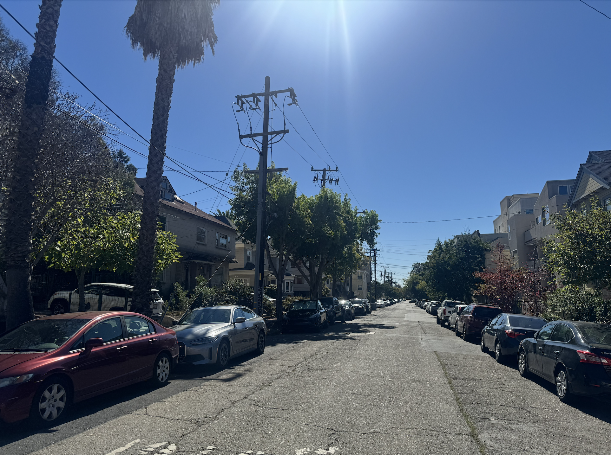
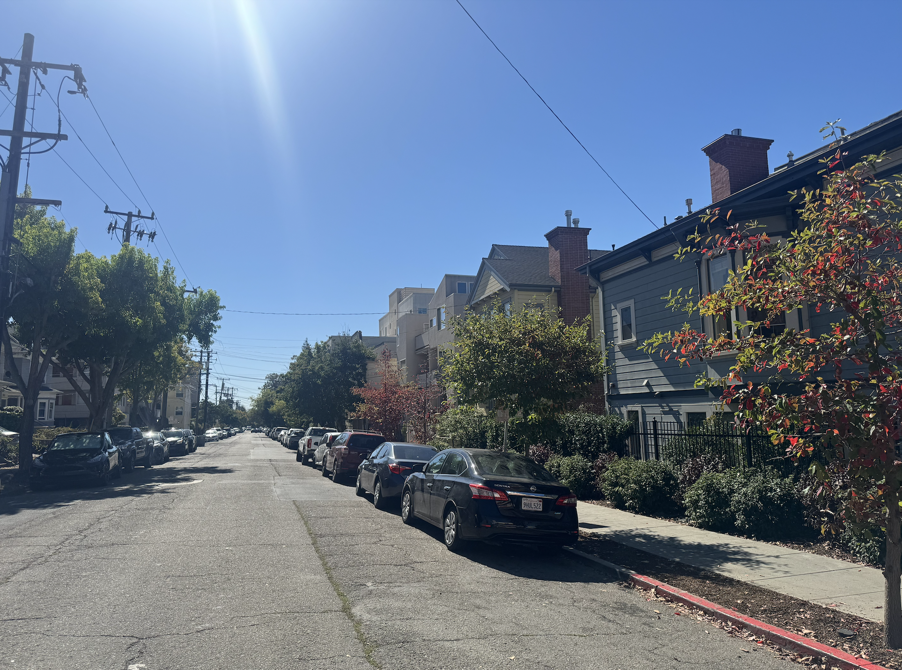
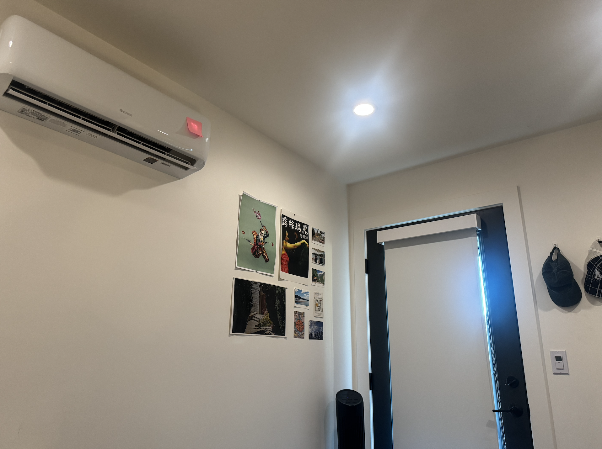
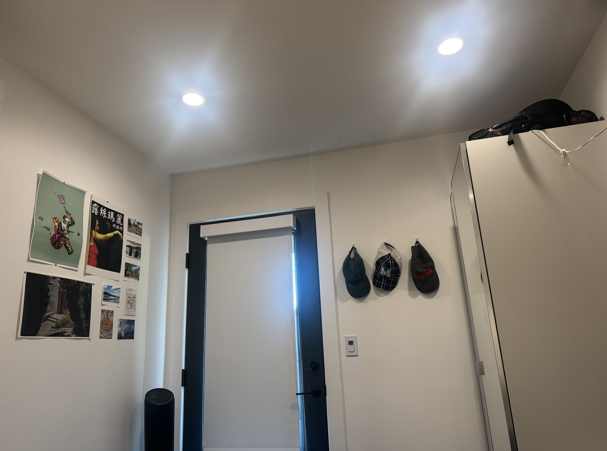
Part A.2: Recover Homographies
In Part A.2, I recover the homography (H) that maps points from Image A to Image B using the Direct Linear Transform (DLT).
Starting from the homogeneous relation x′ ∼ Hx and writing it in inhomogeneous form, each correspondence
(x, y) → (u, v) yields two linear
constraints after clearing the denominator. I stack these into a 2N × 9 system Ah = 0 with unknowns
h = vec(H).
Concretely, for each pair, I add the “u” row
[−x, −y, −1, 0, 0, 0, ux, uy, u] and the “v” row
[0, 0, 0, −x, −y, −1, vx, vy, v].
I build these rows efficiently with vectorized slices so every other row corresponds to the same point.
System size: A ∈ ℝ16×9 (two rows per correspondence)
Full matrix A
# [[ -766.7 -610.3194 -1. 0. 0. 0. 97754.25 77815.7177 127.5 ]
[ 0. 0. 0. -766.7 -610.3194 -1. 414079.8306 329621.6709 540.0806]
[ -888.3796 -655.6914 -1. 0. 0. 0. 243487.6457 179712.3213 274.0806]
[ 0. 0. 0. -888.3796 -655.6914 -1. 543989.1995 401505.2245 612.3387]
[ -750.2011 -855.7409 -1. 0. 0. 0. 61576.9883 70239.7619 82.0806]
[ 0. 0. 0. -750.2011 -855.7409 -1. 617354.9849 704205.7166 822.9194]
[ -876.0054 -890.8011 -1. 0. 0. 0. 225627.9009 229438.7479 257.5645]
[ 0. 0. 0. -876.0054 -890.8011 -1. 758860.8509 771677.9831 866.2742]
[ -725.4527 -1072.2892 -1. 0. 0. 0. 38577.7018 57021.575 53.1774]
[ 0. 0. 0. -725.4527 -1072.2892 -1. 779709.5287 1152486.106 1074.7903]
[ -911.0656 -1074.3516 -1. 0. 0. 0. 266633.6315 314421.1293 292.6613]
[ 0. 0. 0. -911.0656 -1074.3516 -1. 977323.5713 1152484.7004 1072.7258]
[ -1168.8613 -738.186 -1. 0. 0. 0. 701637.2684 443114.0187 600.2742]
[ 0. 0. 0. -1168.8613 -738.186 -1. 833982.5306 526695.7263 713.5 ]
[ -1597.8333 -659.8161 -1. 0. 0. 0. 1589199.879 656250.9935 994.5968]
[ 0. 0. 0. -1597.8333 -659.8161 -1. 1057585.2661 436723.782 661.8871]]Correspondences: (A → B)
# (x, y) (u, v)
Point 1: (766.70, 610.32) (127.50, 540.08)
Point 2: (888.38, 655.69) (274.08, 612.34)
Point 3: (750.20, 855.74) (82.08, 822.92)
Point 4: (876.01, 890.80) (257.56, 866.27)
Point 5: (725.45, 1072.29) (53.18, 1074.79)
Point 6: (911.07, 1074.35) (292.66, 1072.73)
Point 7: (1168.86, 738.19) (600.27, 713.50)
Point 8: (1597.83, 659.82) (994.60, 661.89)A rows (pair 1)
# u-row: [-766.7000, -610.3194, -1, 0, 0, 0, 97754.2500, 77815.7177, 127.5000] · h = 0
v-row: [0, 0, 0, -766.7000, -610.3194, -1, 414079.8306, 329621.6709, 540.0806] · h = 0Homography H
# [ 1.920604 -0.044450 -1279.934283]
[ 0.424871 1.573638 -544.629674]
[ 0.000482 -0.000004 1.000000]
Because Ah = 0 is homogeneous, I solve for the right singular vector of A with the smallest singular value (via SVD), reshape it to 3×3,
and fix the scale by setting H33 ≈ 1. I then visualize the clicked points side-by-side with connecting lines to confirm consistent ordering
and good spatial coverage, both of which are important for numerical stability.
I use no normalization here. In practice, adding Hartley normalization or RANSAC improves robustness, but for this part, the plain DLT with N ≥ 4 clean, well-distributed correspondences recovers a valid H and clearly demonstrates the setup, system Ah = 0, and final matrix. We will, however, explore normalization later in this project.
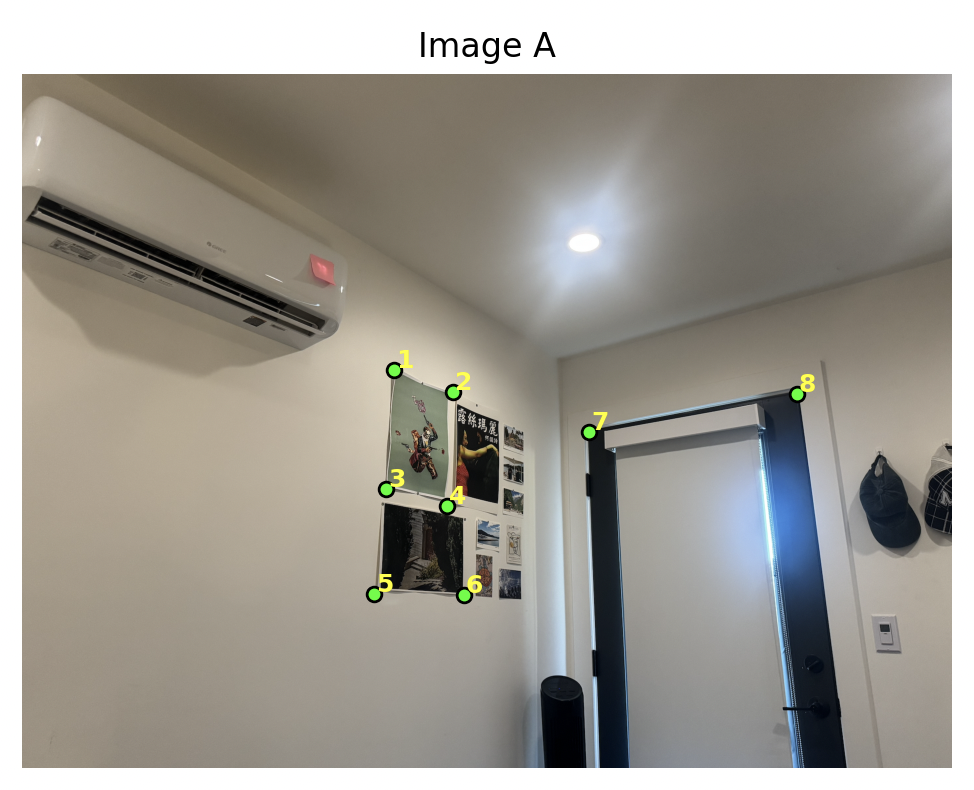
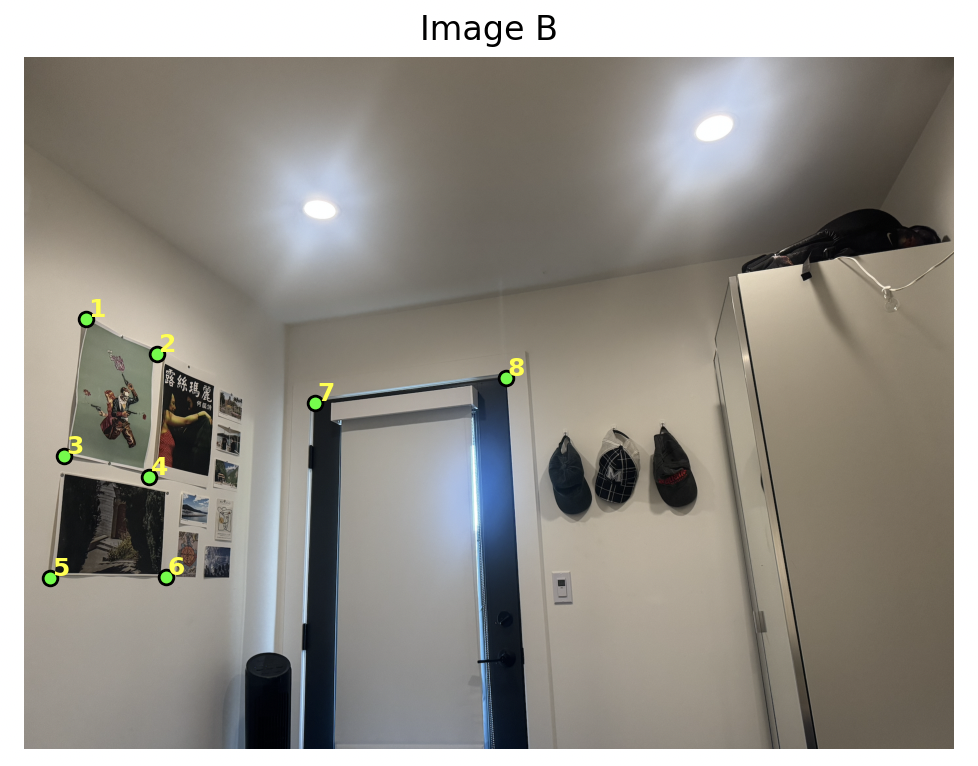
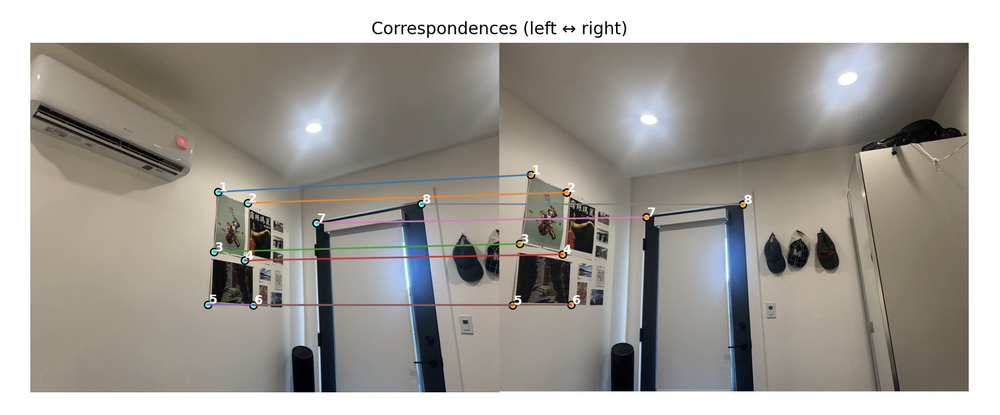
Part A.3: Warp the Images
In Part A.3, I warp a source image into a reference frame using the homography H estimated in A.2.
I use inverse mapping: for every pixel center (x, y) in the destination grid, I compute the corresponding
source coordinate by applying H−1 and then sample the source at that sub-pixel location.
Inverse mapping is important because it guarantees every output pixel knows where to pull data from, which avoids
the holes you get with forward splatting.
For the output canvas, there are two cases. When warping into a reference image, I simply adopt the reference image’s
height and width as the destination grid. For free warps (no fixed reference), I first project the four corners of the
source image through H and take the integer bounding box of those projected corners to define the canvas,
so nothing gets cropped. I generate a full meshgrid of destination pixel centers, transform them with
H−1 to obtain floating-point (xs, ys) in the source, and keep
a boolean valid mask for samples that lie inside the source bounds (useful later for blending). All images are coerced
to RGB: grayscale is stacked to three channels and RGBA drops the alpha channel for consistent math.
I implemented two interpolation methods from scratch. Nearest neighbor rounds
(xs, ys) to the closest integer and copies that pixel value. It is extremely fast
and preserves sharp transitions, but it introduces jagged, stair-stepped edges on diagonals and thin structures.
Bilinear interpolation computes the four neighboring pixels around (xs, ys)
and blends them with weights derived from the sub-pixel offsets. This produces a smoother, more faithful resampling at
a small computational cost and with a touch of blur, which is generally a better trade-off for mosaicing and rectification.
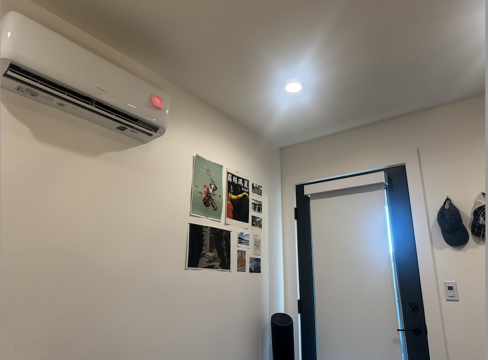
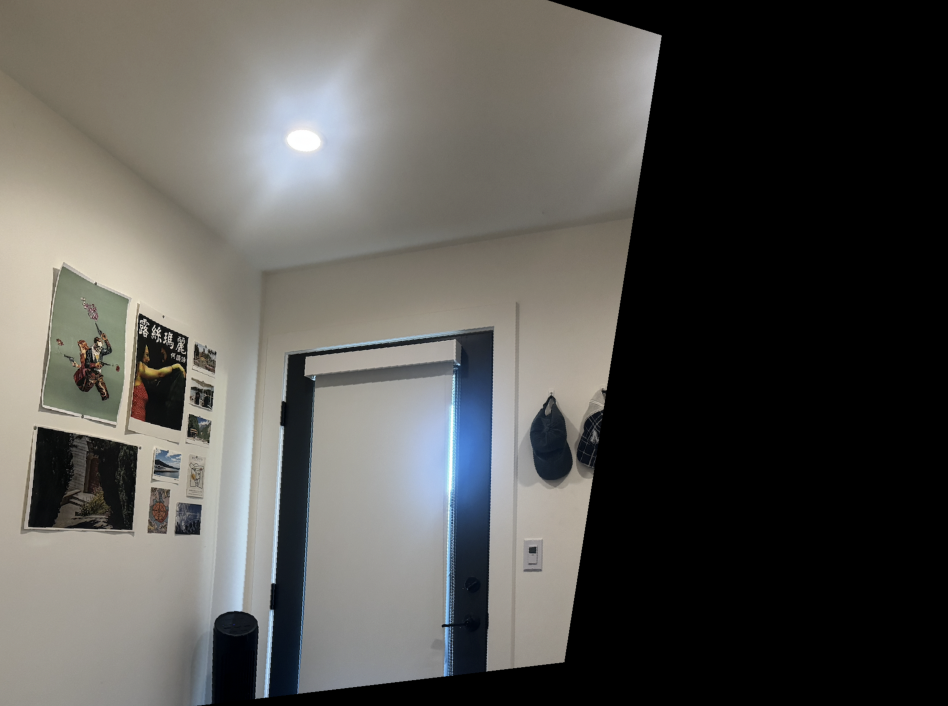
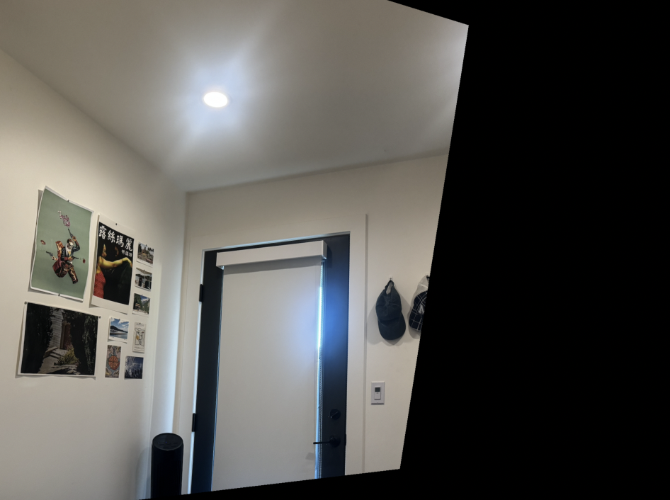
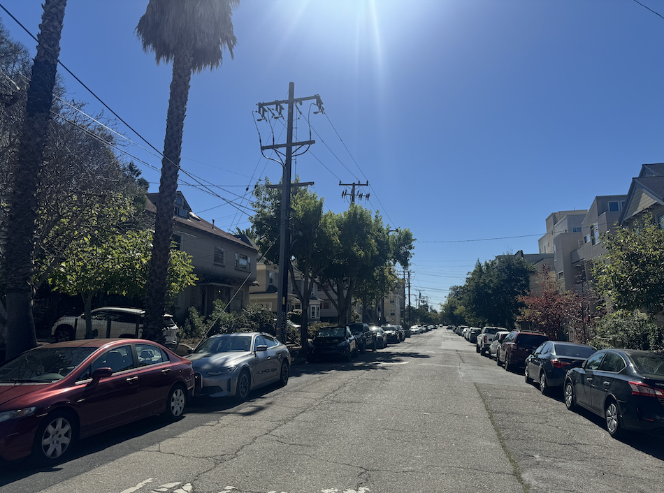
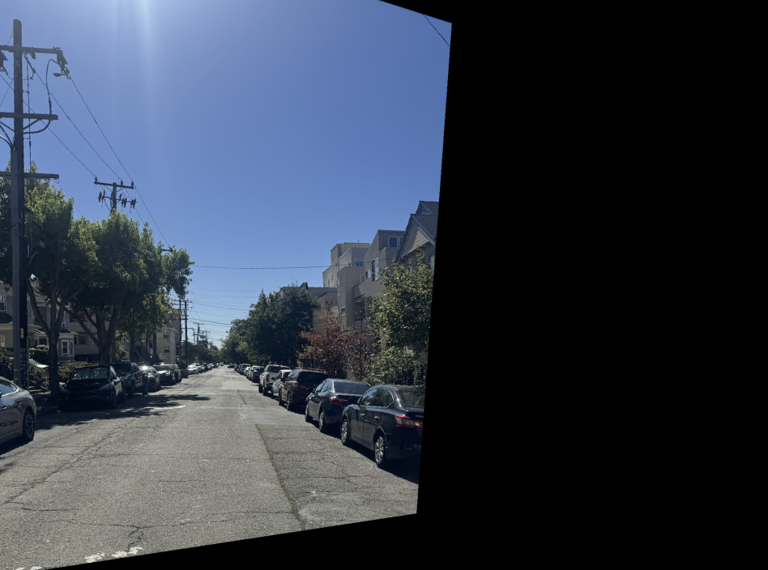
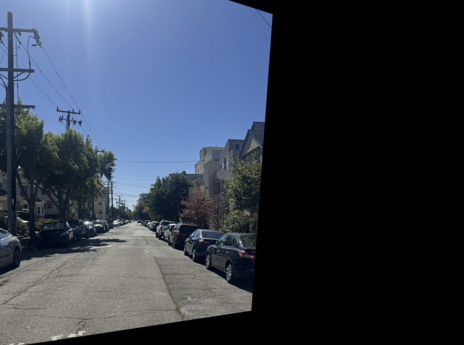
Part A.4: Blend the Images into a Mosaic
I composited warped images on a shared canvas using feather blending within overlap regions. Optionally, multi-band (Laplacian pyramid) blending further reduces visible seams.